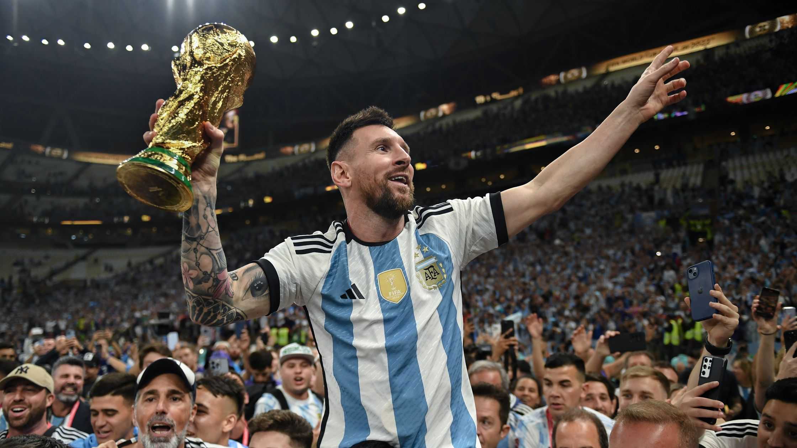
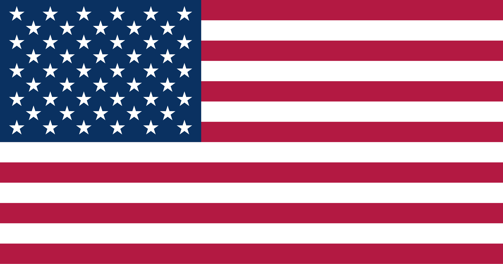
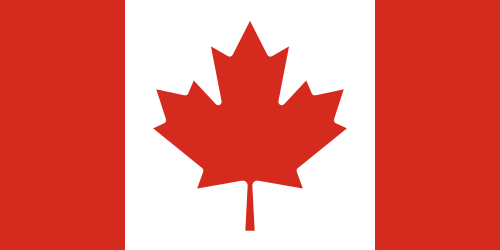

"La Copa Mundial de la FIFA no es solo un torneo; es la cita máxima del deporte. Se celebra cada cuatro años para permitir que las selecciones de todo el mundo compitan en eliminatorias previas y para que el país anfitrión pueda preparar una infraestructura de primer nivel. La espera hace que se genere un anhelo incomparable.


Este año, el Mundial hace historia. Por primera vez, el torneo se expande para incluir a 48 selecciones (antes eran 32), lo que significa más partidos, más países representados y más competencia. Además, es la primera vez que tres países (Estados Unidos, México y Canadá) se unen para organizar el evento de forma conjunta.


